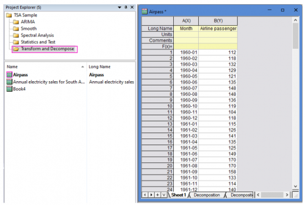
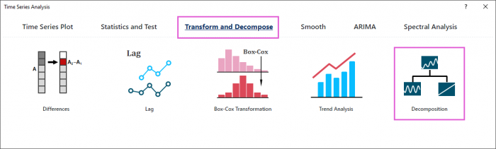
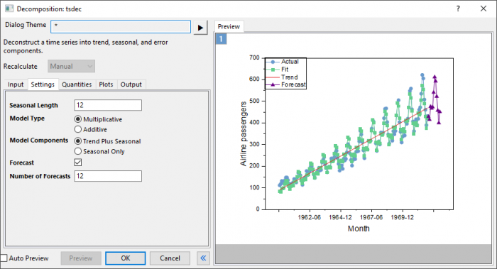
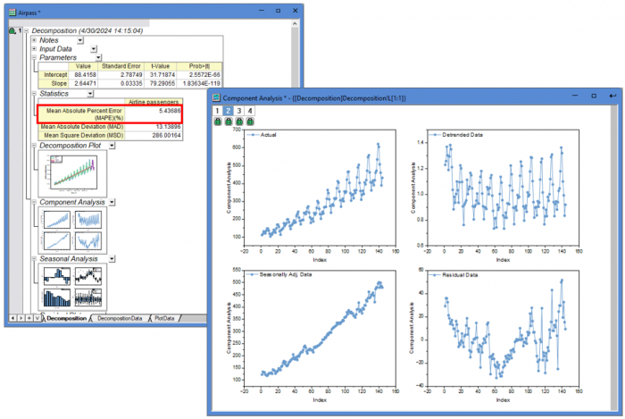
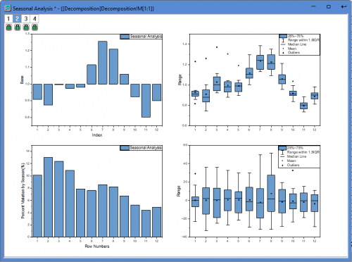

Tutorial for Decomposition
TSA-TD-Decomposition-Tutorial
Notes for Starting
 |
Topics for Further Reading:
|
User Story
The dataset represents monthly international airline passenger totals (measured in thousands) for twelve consecutive years from 1960 to 1972. The dataset indicates a clear trend, because the airline industry enjoyed steady growth over the years. At the same time, the figures follow a seasonal pattern over 12 months.
An analysist wants to decompose the data and make forecasts for the next 6 months.
Steps in Origin
- Open the sample project file in Origin, go to Folder Transform and Decompose using the Project Explorer. Activate the workbook Airpass.

- Highlight column B in worksheet. Click the Time Series Analysis App icon
 in the Apps Gallery window.
in the Apps Gallery window.
- Choose Transform and Decompose tab. Click Decomposition icon to open the dialog.

- In the Setting tab,set Seasonal Length to 12. Choose Multiplicative model type and Trend Plus Seasonal model components. Enter 12 in Number of Forecasts box.

- Click Preview button to display fitted curve with forecasts against actual data.
- Accept all other default settings and click OK button
Interpreting the Results
- The The mean absolute percent error (MAPE) value is 5.44%, indicating the fit data is 5.44% off the original data.It shows the model fits the data quite well.
- The Component Analysis plot include 4 graphs:
- Actual: Original data.
- Detrended Data: Data with the trend component removed from original data.
- Seasonally Adjusted Data: Data with the seasonal component removed from original data.
- Residuals: Difference between actual and fits.

- The Seasonal Analysis plot include 4 graphs:
- Seasonal component plot (base = 1 for multiplicative model):It shows that the seasonal effect goes upward and reaches its largest in July (7th month), and then goes downward and reaches its smallest in November (11th month).
- Box chart for detrended data by season:Detrended data in November is most concentrated.
- Percent variation of detrended data by season:February has the largest variation and November has the smallest variation.
- Box chart for residuals by season:It does not show any obvious effect.
